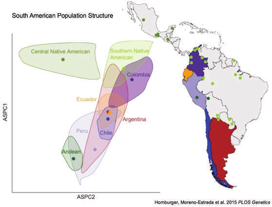

cohorts = FileAttachment("data/cohorts.csv").csv({typed: true})
places = FileAttachment("data/countries.csv").csv({typed: true})
topojson = require("topojson-client@3")
world = d3.json("https://cdn.jsdelivr.net/npm/world-atlas@2/countries-110m.json")
land = topojson.feature(world, world.objects.countries)
partnerColor = new Map(places.map(d => [d.atlas_name, d.color]))
dark = document.body.classList.contains("quarto-dark")A pangenome for Latin America
We are sequencing 1,000 long-read genomes from Indigenous and admixed ancestries across Latin America to find the structural variation that the current human reference genome misses, and to learn what it does in immune cells and in gallbladder cancer.
Countries contributing long-read genomes to the LatinPangenome. Positions mark the country, not a specific community.
From maps to medicine
Aim 1
Maps
Build a graph-based Latin American pangenome from 1,000 PacBio HiFi genomes at 30× and catalog the structural variants absent from the current reference.
About the pangenomeAim 2
Mechanisms
Map how structural variants change gene expression in 29 cell types, using single-cell RNA from 520 of the same people.
About SV-eQTL mappingAim 3
Medicine
Study germline and somatic structural variants in gallbladder cancer among Chilean patients of Mapuche ancestry, the population with the highest burden worldwide.
About the gallbladder studyAim 4
Local capacity, local leadership
Sequencing, analysis and data stewardship happen in Latin America, with yearly hands-on workshops run with CABANAnet.
Why this matters
Populations of the Americas carry alleles found nowhere else, some with clear medical consequences. Yet the Human Pangenome Reference Consortium currently includes no reference population of Indigenous American ancestry, and Latin American populations are strongly substructured. Without a regional reference, the variation that drives health differences across the region stays invisible.

Latest news
No matching items